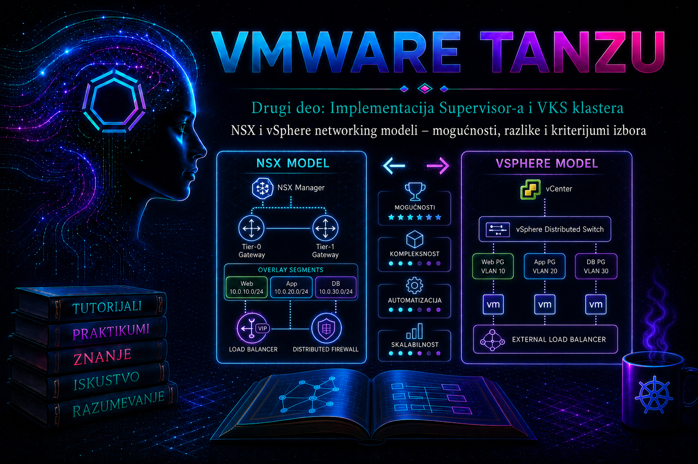

VMware & Tanzu

U prethodnoj lekciji razdvojeni su management, workload, Pod, Service i load balancer adresni prostori i praćen je tok saobraćaja između klijenta, virtuelne IP adrese, Kubernetes servisa i Pod-a. Sada se donosi arhitektonska odluka koja određuje ko te mrežne funkcije realizuje: NSX networking model, u kome NSX obezbeđuje logičko rutiranje, segmentaciju, load balancing i distribuirane bezbednosne kontrole, ili vSphere networking model, u kome se Supervisor i VKS oslanjaju na vSphere Distributed Switch, spolja routable VLAN mreže i zasebno integrisano rešenje za load balancing. Ovo nije samo izbor ekrana u čarobnjaku. Od njega zavise izolacija tenant-a, operativni model, potrebne licence i kompetencije, broj adresnih opsega, vidljivost saobraćaja, način rešavanja incidenata i budući put nadogradnje.
Terminologija se menjala kroz izdanja. U starijoj dokumentaciji sreću se nazivi vSphere with Tanzu, Workload Management, TKG Service, Guest Cluster i NSX-T Data Center. U aktuelnoj terminologiji koriste se vSphere Supervisor, vSphere Kubernetes Service (VKS), vSphere Cluster i NSX. Stari termini ostaju važni pri pretrazi Knowledge Base članaka i logova, ali se arhitektonska odluka uvek proverava prema tačnoj verziji vCenter Server-a, ESXi-ja, Supervisor izdanja, NSX-a, load balancer-a i važećoj Broadcom interoperabilnoj i licencnoj matrici.
1. Granica odluke: fizička mreža, vDS i Kubernetes mrežni sloj
Oba modela počinju istim fizičkim činjenicama: ESXi hostovi imaju uplink veze, VLAN-ove, MTU, routing, DNS, NTP i firewall zavisnosti. I NSX koristi vSphere Distributed Switch kao transportnu osnovu, ali iznad nje dodaje sopstveni kontrolni i podatkovni sloj. Zato poređenje „NSX ili vDS” ne znači da NSX uklanja vDS; znači da se bira da li će workload networking ostati pretežno VLAN/routable model na vDS-u ili će NSX izgraditi overlay, logičke gateway-e i distribuirane servise iznad transporta.
- Management network povezuje vCenter, ESXi i Supervisor control plane komponente. Njena stabilnost, DNS i NTP nisu opcioni, bez obzira na model.
- Workload ili primary workload network nosi interfejse VKS čvorova i druge workload objekte. U vDS modelu ona je neposredno vezana za port grupu i spoljašnji L3 dizajn; u NSX modelu može biti logički segment iza NSX gateway-a.
- Pod i Service CIDR predstavljaju Kubernetes adresne prostore. Njihova realizacija i vidljivost iz fizičke mreže zavise od CNI-ja, Supervisor verzije i izabranog networking stack-a.
- Ingress/load balancer network daje virtual IP adrese za Kubernetes servise tipa
LoadBalanceri API endpoint-e VKS klastera. U vDS modelu servis obezbeđuje eksterni load balancer; u NSX modelu tu ulogu može imati NSX ili podržana integracija sa Avi Load Balancer-om.
| Sloj | NSX model | vSphere networking model | Dokaz koji administrator traži |
|---|---|---|---|
| Switching | VDS transport uz NSX segmente i, zavisno od dizajna, overlay encapsulation | VDS port grupe i VLAN-backed mreže | Ispravan uplink, VLAN/TEP dostupnost, MTU i MAC učenje |
| Routing | NSX Tier-0/Tier-1 ili VPC povezivanje prema izdanju i projektu | Fizički ili virtuelni upstream router; workload subnet mora imati jasan gateway | Route table, povratna ruta i traceroute u oba smera |
| Load balancing | NSX Load Balancer ili podržana Avi integracija; mogućnosti zavise od izdanja | Avi/NSX Advanced Load Balancer, HAProxy u podržanim starijim kombinacijama ili drugo eksplicitno podržano rešenje | VIP, pool/member stanje, health monitor i konekcija do backend-a |
| Mikrosegmentacija | NSX Distributed Firewall i grupe, uz Kubernetes NetworkPolicy gde je podržano | Primarno Kubernetes NetworkPolicy/CNI i spoljašnji firewall; vDS sam nije distribuirani L7/L4 firewall | Efektivna pravila, hit count/log i kontrolisani test dozvoljenog i zabranjenog toka |
| Tenant izolacija | Napredna logička segmentacija; u novijim izdanjima NSX Projects/VPC mogu menjati operativni model | VLAN, port grupa, namespace politika i CNI granice; više oslanjanja na mrežni tim | Dokumentovana granica odgovornosti i odsustvo neželjenog east-west toka |
| Operativna složenost | Više komponenti i telemetrije, ali centralizovaniji mrežni i bezbednosni model | Manje platformskih komponenti, ali više spoljašnjih zavisnosti i ručnog IP/routing planiranja | Vlasnik svake komponente, monitoring, backup i eskalacioni put |
2. NSX networking model: arhitektura i način rada
NSX model uvodi programski definisanu mrežnu fabriku. ESXi hostovi postaju NSX transport nodes, transport zone određuje gde segment može postojati, a Tunnel Endpoint interfejsi (TEP) prenose overlay saobraćaj između hostova i Edge čvorova. Tier-0 gateway predstavlja north-south granicu prema fizičkoj mreži, dok Tier-1 gateway ili odgovarajući VPC gateway organizuje workload segmente i servise. NSX Manager/Local Manager drži upravljačko stanje; NSX control plane distribuira forwarding informacije; podatkovni sloj na hostovima i Edge čvorovima prosleđuje pakete.
Kontrolna i podatkovna ravan moraju se posmatrati odvojeno. Nedostupan NSX Manager može privremeno ostaviti već programirane tokove funkcionalnim, ali sprečava ili ugrožava nove promene i reconciliation. Kvar Edge čvora utiče na servise koji su na njemu centralizovani, kao što su određeni north-south tokovi, NAT ili load balancer. Kvar jednog hosta ne bi smeo da prekine distribuirano rutiranje između workload-a na drugim zdravim hostovima, pod uslovom da su transport, teaming i HA pravilno projektovani.
3. Ključne NSX komponente i zavisnosti
| Komponenta | Uloga | Tipična posledica pogrešnog dizajna |
|---|---|---|
| NSX Manager cluster | Politike, inventar, API, lifecycle i nadzor NSX objekata | Nove mreže ili pravila se ne realizuju; operativni tim nema pouzdanu kontrolnu tačku |
| Transport zone i host transport nodes | Određuju obuhvat overlay/VLAN segmenata na ESXi hostovima | Workload ne može da se poveže posle migracije na host van obuhvata segmenta |
| TEP/IP pool | Adrese tunelskih krajeva i overlay prenos | Intermittent east-west prekidi, fragmentacija ili gubitak paketa zbog MTU neslaganja |
| Edge cluster | Centralizovani servisi, north-south routing, NAT i load balancing prema dizajnu | Jedna Edge instanca ili jedan failure domain postaje tačka otkaza i usko grlo |
| Tier-0/Tier-1 ili VPC povezivanje | Logička L3 hijerarhija i granica prema fizičkoj mreži | Asimetrično rutiranje, nepostojeća povratna ruta ili preklapanje CIDR-a |
| NCP i drugi integracioni kontroleri | Prevode Kubernetes željeno stanje u NSX objekte | Service ostaje bez VIP-a ili mrežni objekti ostaju u pending/reconciliation stanju |
| Distributed Firewall | Politike blizu workload vNIC-a i mikrosegmentacija | Preširoko pravilo povećava blast radius; preusko pravilo prekida DNS, registry, API ili health check tok |
Produkcioni NSX dizajn zahteva redundantne NSX Manager i Edge komponente, razdvojene failure domain-e, plan kapaciteta za Edge datapath i load balancer, podržan BGP ili statički routing prema fizičkoj mreži, MTU koji bez fragmentacije prenosi encapsulated paket i rezervisane adresne opsege koji se ne preklapaju sa data-centre, VPN, cloud i udaljenim lokacijama. „Ping radi” nije dovoljan dokaz: treba proveriti maksimalnu veličinu paketa, oba smera toka, TCP port, health monitor i povratnu rutu.
4. vSphere networking model: jednostavniji stack, eksplicitne spoljašnje zavisnosti
U vSphere networking modelu Supervisor koristi vSphere Distributed Switch i unapred pripremljene port grupe. Workload mreža mora imati odgovarajuću L2/L3 dostupnost, gateway, DNS i rute, dok eksterni load balancer dodeljuje VIP adrese Kubernetes API endpoint-ima i servisima tipa LoadBalancer. Ovaj model može biti veoma prikladan za organizacije sa zrelim VLAN/IPAM procesom, manjim brojem tenant-a i bez potrebe za NSX mikrosegmentacijom. On ipak nije „bez mrežnog kontrolnog sloja”: kontroleri poput AKO-a za Avi ili lbapi komponente za HAProxy usklađuju Kubernetes objekte sa load balancer-om.
Najčešća pogrešna pretpostavka jeste da je vDS model automatski jednostavan. Broj platformskih proizvoda jeste manji, ali odgovornost se pomera na fizički routing, firewall, IPAM, VLAN trunking, eksterni load balancer i koordinaciju timova. Ako nijedan tim nema vlasništvo nad celim tokom od VKS node IP adrese do VIP-a i klijenta, incidenti se pretvaraju u prebacivanje odgovornosti između vSphere, mrežnog i Kubernetes tima.
5. Load balancer nije dodatak, već deo control-plane dostupnosti
VKS control plane endpoint je virtual IP adresa koja mora da prosledi TCP/6443 ka zdravom kube-apiserver-u. Ako je VIP nedostupan, klaster može izgledati kao compute problem: novi čvorovi ostaju u stanju Provisioned, brisanje se ne završava, kubeadmcontrolplane prijavljuje nedostupan control plane, a cloud-init ili kubelet ne mogu da završe bootstrap. Zato se load balancer projektuje sa HA, kapacitetom, stabilnom kontrolnom integracijom, health monitorima i rutama u oba smera.
6. Funkcionalno poređenje i kriterijumi izbora
| Kriterijum | Prednost NSX modela | Prednost vDS modela | Pitanje za arhitektonsku radionicu |
|---|---|---|---|
| Izolacija i multi-tenancy | Logički segmenti, DFW, centralne grupe i napredniji tenant modeli | Dovoljan za manji broj jasno razdvojenih VLAN domena | Da li namespace granica mora imati nezavisnu L3/bezbednosnu granicu? |
| Postojeće znanje i alati | Najbolji kada tim već operativno upravlja NSX-om | Brži kada su vDS, VLAN, IPAM i eksterni LB već standardizovani | Ko dežura u 03:00 i ima pristup svim potrebnim kontrolnim tačkama? |
| Bezbednost | Mikrosegmentacija i centralizovana politika uz bogatiju telemetriju | Manja platformska površina, ali zavisnost od CNI-ja i spoljnog firewall-a | Da li je potreban dokaz kontrole east-west toka na nivou workload-a? |
| Skaliranje | Programski kreirani segmenti i centralni routing model | Jednostavan za ograničen i predvidljiv broj mreža | Koliko klastera, namespace-a, VIP-ova i ruta postoji za tri godine? |
| Lifecycle | Više komponenti koje moraju biti interoperabilne i nadograđene redosledom | Manje NSX zavisnosti, ali zaseban lifecycle load balancer-a ostaje | Postoji li testirana matrica i rollback za vCenter, ESXi, Supervisor, NSX i LB? |
| Trošak | Opravdan kada se koriste njegove bezbednosne i mrežne mogućnosti | Može smanjiti složenost i licencni trošak za skromnije potrebe | Da li se poredi ukupan trošak vlasništva, uključujući operacije i incidente? |
| Disaster recovery | Politike i logički objekti zahtevaju usklađen NSX recovery plan | Tradicionalnije VLAN/routing zavisnosti mogu biti lakše za postojeći DR tim | Kako se ponovo uspostavljaju VIP, rute, certifikati i DNS nakon failover-a? |
Ispravan izbor ne nastaje sabiranjem marketinških funkcija. Najpre se definišu obavezni zahtevi: broj failure domain-a, maksimalni prekid, tenant izolacija, regulatory kontrole, north-south kapacitet, potreban broj VIP-ova, integracija sa postojećim IPAM/DNS/firewall sistemima, RTO/RPO i operativno znanje. Zatim se eliminišu modeli koje tačna verzija i licenca ne podržavaju. Tek tada se porede cena, brzina implementacije i funkcionalna širina.
7. Matrica odluke: preporučeni scenariji i upozorenja
- NSX je prirodan izbor kada organizacija već ima produkcioni NSX, zahteva mikrosegmentaciju, mnogo tenant-a ili automatizovano kreiranje izolovanih mrežnih domena, i raspolaže timom koji razume overlay, Edge, BGP i DFW.
- vDS je razuman izbor za manji broj klastera i workload mreža, kada je VLAN/L3 infrastruktura stabilna, podržan load balancer već postoji, a napredne NSX funkcije nisu poslovni zahtev.
- vDS nije dobar izbor ako bi eksplozija VLAN-ova, ručne promene firewall-a i koordinacija više timova postale kočnica za svaki novi namespace ili klaster.
- NSX nije dobar izbor ako se uvodi samo da bi čarobnjak bio završen, bez stručnog vlasnika, monitoringa, backup-a konfiguracije, lifecycle plana i kapaciteta Edge sloja.
- Postojeća implementacija nije automatski obrazac za novu. Podržan legacy dizajn može ostati operativan do planirane migracije, dok se za novu lokaciju bira održiviji stack.
8. Planiranje dostupnosti, performansi i kapaciteta
High availability se ne dobija samo postavljanjem dva Edge čvora ili dve load balancer instance. Potrebno je dokazati da nisu u istom failure domain-u, da uplinkovi i ToR putanje nisu zajednička tačka otkaza, da BGP ili statičke rute konvergiraju, da health monitor ne šalje saobraćaj na nezdrav backend i da se session state ponaša kako aplikacija očekuje. Kod vDS modela isto važi za load balancer kontrolere i service engine-ove, kao i za mrežu koja ih povezuje sa workload port grupama.
Kapacitet se računa od stvarnog toka, ne od broja klastera. Posmatraju se ukupan i vršni throughput, broj novih konekcija u sekundi, simultane konekcije, TLS termination, veličina paketa, east-west prema north-south odnosu, broj VIP-ova i health check-ova. Overlay dodaje encapsulation overhead, pa MTU mora biti usklađen duž cele fizičke putanje. Jumbo frames nisu cilj sami po sebi; cilj je konzistentan MTU bez tihe fragmentacije ili drop-a.
9. Bezbednosni model i razdvajanje odgovornosti
Kubernetes RBAC određuje ko može da menja Kubernetes objekte, ali sam po sebi ne ograničava mrežni tok. Kubernetes NetworkPolicy određuje dozvoljene Pod tokove samo ako ih izabrani CNI stvarno sprovodi. NSX DFW kontroliše tok na infrastrukturnom sloju, dok fizički firewall kontroliše granice data centra. Ove kontrole se dopunjuju; ne treba ih tretirati kao međusobne zamene. Za svaki tok mora se znati vlasnik pravila, izvor istine, redosled evaluacije i mesto logovanja.
10. Pre-deployment kontrolna lista
- Potvrđene su tačne verzije, licence i interoperabilna matrica za vCenter, ESXi, Supervisor, NSX i load balancer.
- CIDR-ovi za management, workload, Pod, Service, TEP i VIP ne preklapaju se međusobno niti sa korporativnim, cloud, VPN i DR mrežama.
- DNS ima forward i, gde je potrebno, reverse zapise; NTP je dosledan na svim komponentama.
- VLAN trunking, gateway, rute u oba smera i firewall portovi potvrđeni su dokazima, ne samo dokumentom dizajna.
- MTU je testiran od kraja do kraja za najzahtevniji put, uključujući overlay ako se koristi.
- Load balancer pool, VIP range, management pristup, certifikati, HA i kapacitet unapred su pripremljeni.
- Za NSX su potvrđeni transport zone, TEP pool, Edge cluster, Tier-0/Tier-1 ili VPC dizajn i north-south routing.
- Postoji RACI: ko upravlja vDS-om, NSX-om, IPAM-om, DNS-om, firewall-om, load balancer-om, Supervisor-om i VKS-om.
- Monitoring, centralno logovanje, backup konfiguracije i support bundle postupak testirani su pre produkcije.
- Promena ima plan validacije, kriterijume za prekid, rollback i termin bez konflikta sa drugim mrežnim promenama.
11. Praktikum: uporedna validacija postojećeg mrežnog modela
Cilj: bez promene produkcionog stanja prikupiti dokaze o aktivnom Supervisor networking modelu, mapirati jedan VKS control plane VIP do backend endpoint-a i utvrditi gde bi se tražio kvar. Vežba je read-only sve do posebno označene laboratorijske simulacije.
Topologija: administratorska radna stanica sa pristupom vCenter-u i Supervisor API-ju; jedan Supervisor; jedan VKS klaster u test namespace-u; odgovarajući NSX Manager ako se koristi NSX ili administratorski pristup Avi/HAProxy kontrolnoj ravni ako se koristi vDS model. Potrebni su read-only vCenter/NSX/LB nalozi i Kubernetes nalog sa pravom get, list i describe nad relevantnim objektima.
Rizik: osnovni koraci su neinvazivni. Nemojte menjati port grupu, transport node, Tier gateway, health monitor, VIP pool ili Service selektor u produkciji radi simulacije kvara. Za to se koristi izolovani laboratorijski namespace i posebno odobren change.
Vežba 1 – identifikacija modela i inventar zavisnosti
- U vSphere Client-u otvorite Workload Management ili odgovarajući Supervisor Management prikaz za svoju verziju i zabeležite izabrani networking stack, vDS, workload mrežu i load balancer konfiguraciju.
- Ako je model NSX, u NSX Manager-u read-only proverite odgovarajuće transport node profile, transport zone, Edge cluster, gateway-e i segmente. Nemojte pretpostaviti mapiranje samo iz naziva.
- Ako je model vDS, u Networking inventaru proverite distributed port group, VLAN ID/trunk, teaming/failover i MTU. Zatim u load balancer kontrolnoj ravni pronađite objekat povezan sa Supervisor-om.
- Napravite tabelu vlasništva: objekat, sistem, identifikator, failure domain, vlasnik, monitoring i backup postupak.
Sa radne stanice, u odgovarajućem Supervisor kontekstu, izvršite sledeće read-only komande. One prikazuju čvorove, servise, endpoint-e, VKS Cluster API objekte i podove integracionih kontrolera.
kubectl config current-context
kubectl get nodes -o wide
kubectl get svc -A -o wide
kubectl get endpoints -A
kubectl get cluster,kubeadmcontrolplane,machine -A -o wide
kubectl get pods -A | egrep 'ncp|ako|lbapi'
Očekivani rezultat: model iz GUI-ja može da se poveže sa stvarnim kontrolerom: ncp ukazuje na NSX integraciju, ako na Avi/NSX Advanced Load Balancer integraciju, a lbapi na HAProxy integraciju. Naziv pod-a nije dovoljan dokaz podrške ili zdravlja; mora biti Running, bez ponavljanih restarta, a njegova verzija mora odgovarati matrici proizvoda.
Vežba 2 – praćenje VKS API VIP-a do backend-a
Izaberite jedan test VKS klaster i zamenite vrednosti u uglastim zagradama. Prve četiri komande čitaju Kubernetes stanje. curl -vk uspostavlja TLS konekciju bez izmene servera; opcija -k zanemaruje validaciju sertifikata i zato je namenjena samo dijagnostici, ne normalnoj administraciji.
NAMESPACE='[vks-namespace]'
CLUSTER='[vks-cluster]'
kubectl get cluster -n "$NAMESPACE" "$CLUSTER" -o wide
kubectl describe cluster -n "$NAMESPACE" "$CLUSTER"
kubectl get svc -n "$NAMESPACE" | grep control-plane
kubectl get endpoints -n "$NAMESPACE"
curl -vk --connect-timeout 5 'https://[vks-api-vip]:6443/readyz'
HTTP odgovor 200 i telo ok predstavljaju jak dokaz da VIP, load balancer i najmanje jedan kube-apiserver rade. Odgovor 401 ili 403 takođe potvrđuje mrežnu i TLS dostupnost, ali ne i autorizaciju. Timeout ukazuje na routing, firewall, MTU ili load balancer problem; connection refused češće ukazuje na dostupan host/VIP bez procesa koji sluša ili bez zdravog backend-a. Sertifikatska greška potvrđuje da je TCP/TLS put makar delimično uspostavljen i rešava se odvojeno od routinga.
U NSX/Avi/HAProxy kontrolnoj ravni pronađite isti VIP i proverite pool members, port 6443, health monitor, poslednju promenu i alarm. Backend IP adrese treba da odgovaraju control plane endpoint-ima koje prikazuje Kubernetes. Svako neslaganje dokumentujte pre korekcije; ručno prepravljanje automatski upravljanog pool-a obično nije trajno rešenje jer ga kontroler može vratiti u željeno stanje.
Vežba 3 – routing, DNS i MTU bez promene stanja
Sa odobrene dijagnostičke tačke proverite rezoluciju, putanju i port. Linux komande su read-only u odnosu na infrastrukturu; tracepath ili traceroute mogu biti filtrirani, pa njihov izostanak odgovora nije sam po sebi dokaz kvara.
getent ahosts '[supervisor-or-vks-fqdn]'
ip route get '[vip-address]'
tracepath '[vip-address]'
nc -vz -w 5 '[vip-address]' 6443
# Laboratorijski MTU test; prilagodite veličinu očekivanom putu.
ping -c 4 -M do -s 1472 '[destination-ip]'
Za standardni IPv4 Ethernet MTU 1500, ICMP payload 1472 zajedno sa IP i ICMP zaglavljima daje paket od 1500 bajtova. Kod overlay putanje potrebna je veća fizička MTU vrednost zbog encapsulation overhead-a; tačna vrednost se preuzima iz podržanog NSX dizajna, a ne pogađa. Ako mali ping prolazi, a veliki sa DF ne prolazi, istražuju se MTU i ICMP „fragmentation needed” pravila pre promene aplikacije.
Vežba 4 – laboratorijska simulacija i bezbedan rollback
Kreirajte privremeni namespace, mali web deployment i Service tipa LoadBalancer. Zatim promenite selektor servisa na vrednost koja ne odgovara nijednom Pod-u. Time VIP može ostati dodeljen, ali lista endpoint-a postaje prazna, što bezbedno demonstrira razliku između postojanja VIP-a i zdravog backend-a.
apiVersion: v1
kind: Namespace
metadata:
name: netmodel-lab
---
apiVersion: apps/v1
kind: Deployment
metadata:
name: web
namespace: netmodel-lab
spec:
replicas: 2
selector:
matchLabels:
app: web
template:
metadata:
labels:
app: web
spec:
containers:
- name: web
image: nginx:stable
ports:
- containerPort: 80
---
apiVersion: v1
kind: Service
metadata:
name: web-lb
namespace: netmodel-lab
spec:
type: LoadBalancer
selector:
app: web
ports:
- port: 80
targetPort: 80kubectl apply -f netmodel-lab.yaml
kubectl -n netmodel-lab rollout status deployment/web
kubectl -n netmodel-lab get pods,svc,endpoints -o wide
# State-changing, samo u laboratoriji: uvodi namerno pogrešan selektor.
kubectl -n netmodel-lab patch service web-lb \
--type merge -p '{"spec":{"selector":{"app":"does-not-exist"}}}'
kubectl -n netmodel-lab get svc,endpoints web-lb -o wide
kubectl -n netmodel-lab describe service web-lb
# Rollback: vraća originalni selektor.
kubectl -n netmodel-lab patch service web-lb \
--type merge -p '{"spec":{"selector":{"app":"web"}}}'
kubectl -n netmodel-lab get endpoints web-lb -wOčekivani rezultat: posle pogrešnog selektora Service postoji i može zadržati external IP, ali endpoint-i nestaju, health monitor označava backend nezdravim, a zahtev ka VIP-u ne dobija ispravan odgovor. Posle rollback-a endpoint-i se ponovo pojavljuju i health stanje se oporavlja nakon intervala provere. Kriterijum završetka nije samo vraćen endpoint: potrebno je potvrditi uspešan HTTP odgovor kroz VIP i odsustvo novih alarma.
Po završetku laboratorije uklonite samo objekat koji ste kreirali. Sledeća komanda je state-changing i briše ceo test namespace; pre izvršavanja proverite tačno ime.
kubectl get namespace netmodel-lab
kubectl delete namespace netmodel-lab
kubectl get namespace netmodel-lab12. Sistematični troubleshooting: od simptoma do osnovnog uzroka
Dijagnostika počinje definisanjem simptoma, obima i vremena: da li je pogođen jedan Service, jedan VKS klaster, ceo namespace, svi workload-i na jednom ESXi hostu ili ceo Supervisor. Zatim se proveravaju poslednje promene, alarmi i zavisnosti. Tek nakon prikupljanja dokaza postavlja se hipoteza. Nasumično restartovanje kontrolera može ukloniti trag, izazvati reconciliation i proširiti incident.
| Simptom | Prva bezbedna provera | Verovatne grane | Trajna korektivna mera |
|---|---|---|---|
Service ostaje Pending bez external IP |
kubectl describe svc, događaji i stanje NCP/AKO/lbapi pod-a |
VIP pool iscrpljen, kontroler ne radi, RBAC/certifikat/API greška | Vratiti kapacitet ili ispraviti integraciju; ne unositi nasumičan external IP |
| VIP postoji, ali nema odgovora | Endpoint-i, pool members, health monitor i TCP/port test | Prazan selektor, nezdrav backend, firewall, routing ili MTU | Ispraviti osnovni uzrok i potvrditi oba smera toka |
| Samo workload-i na jednom hostu gube mrežu | Host alarms, pNIC/uplink, transport node i VDS port status | Uplink/VLAN, TEP, teaming ili host transport konfiguracija | Vratiti konzistentan host profile/transport node i proveriti migraciju |
Novi VKS čvorovi ostaju Provisioned |
Machine/KCP stanje, VKS VIP:6443 i cloud-init log | VIP routing, API backend, DNS/NTP, bootstrap ili certifikat | Oporaviti control plane put; tek zatim dozvoliti reconciliation |
| Mali paketi rade, veće sesije pucaju | DF ping/tracepath i drop counters duž putanje | Nedosledan MTU, PMTUD blokiran ili overlay overhead | Uskladiti MTU end-to-end i dozvoliti potrebne ICMP poruke |
| Samo north-south tok ne radi | Gateway/Edge ili eksterni LB, BGP/rute i upstream firewall | Edge servis, route advertisement, NAT, asymmetric routing | Vratiti podržanu HA/routing politiku i dokumentovati putanju |
13. Logovi, događaji i korelacija
- Kubernetes događaji:
kubectl get events -A --sort-by=.metadata.creationTimestamppovezuje vreme greške sa Service, Cluster API i Machine objektima. Događaji imaju ograničeno zadržavanje, pa ih treba prikupiti rano. - Integracioni kontroleri:
kubectl logsnad NCP, AKO ili lbapi pod-om otkriva odbijeni API poziv, problem sertifikata, iscrpljen pool ili reconciliation grešku. Najpre se utvrđuju namespace, pod i kontejner; ne koristi se slepo--all-containersnad celim klasterom u dužem periodu. - vCenter: Tasks, Events, Alarms i Supervisor status povezuju mrežni simptom sa lifecycle operacijom. Za dublju analizu relevantni su WCP i vCenter servisi, ali se support bundle preferira nad nekontrolisanim ručnim izmenama appliance-a.
- NSX: alarmi, transport node/Edge status, traceflow, port statistics, routing/BGP stanje i DFW logovi koriste se zajedno. Traceflow je dijagnostički alat, ne zamena za realan packet capture.
- Load balancer: control-plane audit, virtual service, pool, service engine i health-monitor logovi moraju se vremenski korelisati sa Kubernetes događajem i backend stanjem.
- VKS čvor:
/var/log/cloud-init-output.log,journalctl -u kubeleti container runtime logovi pomažu tek kada je pristup čvoru odobren i kada su spoljne mrežne provere već suzile uzrok.
kubectl get events -A --sort-by=.metadata.creationTimestamp
kubectl -n '[controller-namespace]' logs '[controller-pod]' \
--since=30m --timestamps
kubectl -n '[controller-namespace]' describe pod '[controller-pod]'
Karakteristični obrasci su timeout, context deadline exceeded, no available IP, certificate, unauthorized, no route to host i ponovljeni reconciliation. Nijedan obrazac nije samostalna dijagnoza. Na primer, timeout može nastati na DNS-u, firewall-u, routingu, health monitoru ili backend aplikaciji; zato se uvek povezuje sa tačnim odredištem, portom, vremenom i packet/flow dokazom.
14. Incident response, privremeno rešenje i recovery
- Stabilizujte obim: zaustavite povezane promene i sačuvajte vreme početka, pogođene namespace-e, klastere, VIP-ove i hostove.
- Prikupite dokaze: Kubernetes YAML/status, događaje, LB pool stanje, NSX/vDS alarm, route table i relevantne logove. Izbegnite tajne iz kubeconfig-a i support bundle-a u tiketima bez zaštićenog kanala.
- Postavite hipotezu: odvojite control-plane problem od data-plane problema i lokalni kvar od sistemskog.
- Primeni najmanju korekciju: vratite poslednju potvrđenu konfiguraciju, oslobodite VIP pool ili popravite određenu rutu. Ručni unos u automatski upravljani NSX/LB objekat koristi se samo po zvaničnom runbook-u ili uz podršku proizvođača.
- Validirajte recovery: proverite API
/readyz, endpoint-e, health monitor, realan zahtev kroz VIP, nove Machine operacije i odsustvo ponovljenih alarma. - Utvrdi osnovni uzrok: privremeni failover ili restart nije root cause. Trajna mera može biti proširen VIP pool, korekcija MTU-a, uklanjanje preklopljenog CIDR-a, HA redizajn ili promena lifecycle procedure.
15. Migracija između modela: tretirati kao novu mrežnu arhitekturu
Prelazak sa vDS na NSX ili obrnuto ne treba tretirati kao zamenu jedne opcije na postojećem Supervisor-u. Mogućnost in-place promene zavisi od konkretnog izdanja i podržanog workflow-a; u mnogim realnim okruženjima bezbedniji obrazac je novi Supervisor ili novi workload domain, paralelna validacija, migracija workload-a i kontrolisano gašenje starog okruženja. Razlozi su promena CNI/integracionog kontrolera, adresnih opsega, VIP implementacije, routing granica, security policy-ja i vlasništva nad objektima.
Plan migracije mora sadržati mapiranje DNS-a i certifikata, kompatibilnost aplikacija sa promenom source IP/NAT ponašanja, ponovno kreiranje Service VIP-ova, NetworkPolicy/DFW ekvivalenciju, storage i backup zavisnosti, redosled migracije namespace-a, test povratka i jasno definisanu tačku posle koje rollback više nije prost. Kubernetes manifesti se mogu ponovo primeniti, ali stanje aplikacije, external IP adrese i infrastrukturne politike nisu automatski prenosivi.
16. Administratorske prakse
- Vodite verzionisani dijagram stvarnog toka sa CIDR-ovima, gateway-ima, VLAN/segment identifikatorima, VIP pool-ovima, portovima i vlasnicima.
- Svaki novi adresni opseg proverite centralnim IPAM-om i rutama svih povezanih lokacija pre enablement-a Supervisor-a.
- Razdvojite read-only dijagnostiku od state-changing korekcije i zabeležite svaku ručnu intervenciju nad automatski upravljanim objektom.
- Testirajte kvar jedne Edge/LB instance, uplinka i backend-a u laboratoriji ili kontrolisanom pre-production okruženju.
- Pratite iskorišćenje VIP i TEP pool-ova, Edge/service-engine kapacitet, BGP stanje, drop counters, health monitor i restart integracionih kontrolera.
- Pre svake nadogradnje proverite ne samo kompatibilnost proizvoda već i deprecation napomene, redosled nadogradnje i poznate probleme za konkretan build.
- Ne proglašavajte incident rešenim dok se ne potvrde control-plane i data-plane tok, nova reconciliation operacija i normalno ponašanje monitoringa.
17. Završna kontrolna tačka
Lekcija je savladana kada administrator može da:
- objasni zašto NSX model i vDS model dele fizičku/vDS osnovu, ali imaju različit logički i operativni sloj;
- nacrta putanju od VKS API VIP-a do kube-apiserver backend-a i navede kontrolnu tačku za svaki hop;
- razlikuje uloge NCP, AKO i lbapi integracionih komponenti bez poistovećivanja proizvoda;
- izabere model na osnovu tenant izolacije, bezbednosti, skaliranja, kompetencija, lifecycle-a i ukupnog troška;
- prepozna verzijski rizik vDS + HAProxy dizajna u VCF 9.0 i zahteva aktuelnu matricu pre odluke;
- read-only komandama proveri Service VIP, endpoint-e, Cluster API stanje, DNS, routing, TCP port i MTU;
- razdvoji simptom, neposredni uzrok, osnovni uzrok, privremeno rešenje i trajnu korektivnu meru;
- izvede bezbednu laboratorijsku simulaciju praznog backend pool-a, rollback i potpunu validaciju oporavka;
- objasni zašto migracija networking modela zahteva projektni plan, a ne improvizovanu izmenu aktivnog Supervisor-a.
18. Zaključak
NSX i vSphere networking modeli mogu obezbediti pouzdanu osnovu za Supervisor i VKS, ali rešavaju problem različitim rasporedom funkcija i odgovornosti. NSX donosi programsku logičku mrežu, distribuiranu bezbednost i bogat tenant model, uz veću komponentnu i lifecycle složenost. vDS model koristi poznat VLAN/routing pristup i eksterni load balancer, uz manje NSX zavisnosti, ali zahteva disciplinovan IPAM, jasne spoljašnje rute, dovoljno skalabilan LB i snažnu saradnju infrastrukturnih timova.
Odgovoran administrator ne bira prema najkraćem čarobnjaku niti prema najvećem broju funkcija. On prvo definiše poslovne i tehničke zahteve, potvrđuje podršku za tačan build, projektuje failure domain-e i adresne prostore, dokazuje tok paketa i obezbeđuje monitoring, rollback i vlasništvo. Ta odluka priprema osnovu za naredne lekcije o CNI-ju, Pod i Service mrežama, load balancer servisima i kontrolisanom izlaganju aplikacija.